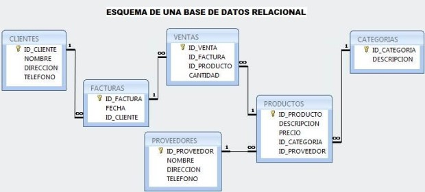

2. Base de Datos Relacional
A continuación veamos la representación gráfica de una base de datos relacional

Una base de datos relacional es una colección de elementos de datos organizados en un conjunto de tablas formalmente descritas desde la que se puede acceder a los datos o volver a montarlos de muchas maneras diferentes sin tener que reorganizar las tablas de la base. La base de datos relacional fue inventada por E.F. Codd en IBM en 1970
La interfaz estándar de programa de usuario y aplicación a una base de datos relacional es el lenguaje de consultas estructuradas (SQL). Los comandos de SQL se utilizan tanto para consultas interactivas para obtener información de una base de datos relacional y para la recopilación de datos para los informes.
Margaret Rouse. (2015). Base de datos relacional. 19-04-2019, de Searchdatacenter Sitio web: https://searchdatacenter.techtarget.com/es/definicion/Base-de-datos-relacionald
3. Pasos para crear una base de datos bien estructurada
Diseñar una base de datos útil y eficiente requiere seguir el proceso adecuado, incluidas las siguientes etapas:
- Análisis de los requisitos o identificación del propósito de tu base de datos.
- Organización de los datos en tablas.
- Especificación de las claves primarias y análisis de las relaciones.
- Normalización para estandarizar las tablas.
4. Estructura de la base de datos: los bloques de creación de una base de datos
El siguiente paso es organizar la representación visual de tu base de datos. Para ello, debes comprender exactamente cómo se estructuran las bases de datos relacionales.
Dentro de una base de datos, los datos relacionados se agrupan en tablas, cada una de ellas consiste en filas (también llamadas "tuplas") y columnas, como una hoja de cálculo.
Para convertir tus listas de datos en tablas, comienza creando una tabla para cada tipo de entidad, como productos, ventas, clientes y pedidos. Te mostramos un ejemplo a continuación:
Cada fila de una tabla se llama "registro". Los registros incluyen datos sobre algo o alguien, como un cliente específico. En cambio, las columnas (también conocidas como "campos" o "atributos") contienen un único tipo de información que aparece en cada registro, como las direcciones de todos los clientes enumerados en la tabla. Las tablas que crear son:
| Nombre |
Apellido |
Edad |
Código |
| Juan Stevan |
De Jesús |
20 |
34760 |
| Carlos Alberto |
Sosa |
21 |
34761 |
| Mario Fernando |
Bedoya |
23 |
34762 |
| Héctor Fabián |
Vélez |
23 |
34763 |
| Víctor Hugo |
Alfonso |
25 |
34764 |
Para que los datos consistentes de un registro al siguiente, asigna el tipo de datos apropiado a cada columna. Los tipos de datos comunes incluyen:
CHAR - una longitud específica de texto.
VARCHAR - texto de longitudes variables.
TEXT - grandes cantidades de texto.
INT - número entero positivo o negativo.
FLOAT, DOUBLE - también puede almacenar números de punto flotante.
BLOB - datos binarios.